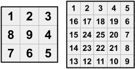
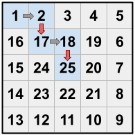
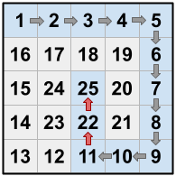

As punishment for being naughty, Dante has been trapped in a strange house with many rooms. The house is an $$$\mathbf{N} \times \mathbf{N}$$$ grid of rooms, with $$$\mathbf{N}$$$ odd and greater than $$$1$$$. The upper left room is numbered $$$1$$$, and then the other rooms are numbered $$$2$$$, $$$3$$$, ..., $$$\mathbf{N}^2$$$, in a clockwise spiral pattern. That is, the numbering proceeds along the top row of the grid and then makes a 90 degree turn to the right whenever a grid boundary or an already numbered room is encountered, and finishes in the central room of the grid. Because $$$\mathbf{N}$$$ is odd, there is always a room in the exact center of the house, and it is always numbered $$$\mathbf{N}^2$$$.
For example, here are the room numberings for houses with $$$\mathbf{N} = 3$$$ and $$$\mathbf{N} = 5$$$:

Dante starts off in room $$$1$$$ and is trying to reach the central room (room $$$\mathbf{N}^2$$$). Throughout his journey, he can only make moves from his current room to higher-numbered, adjacent rooms. (Two rooms must share an edge — not just a corner — to be adjacent.)
Dante knows that he could walk from room to room in consecutive numerical order — i.e., if he is currently in room $$$x$$$, he would move to room $$$x+1$$$, and so on. This would take him exactly $$$\mathbf{N}^2 - 1$$$ moves. But Dante wants to do things his way! Specifically, he wants to reach the central room in exactly $$$\mathbf{K}$$$ moves, for some $$$\mathbf{K}$$$ strictly less than $$$\mathbf{N}^2 - 1$$$.
Dante can accomplish this by taking one or more shortcuts. A shortcut is a move between rooms that are not consecutively numbered.
For example, in the $$$5 \times 5$$$ house above,
As a specific example using the $$$5 \times 5$$$ house above, suppose that $$$\mathbf{K}$$$ = $$$4$$$. One option is for Dante to move from $$$1$$$ to $$$2$$$, then move from $$$2$$$ to $$$17$$$ (which is a shortcut), then move from $$$17$$$ to $$$18$$$, then move from $$$18$$$ to $$$25$$$ (which is another shortcut). This is illustrated below (the red arrows represent shortcuts):

Can you help Dante find a sequence of exactly $$$\mathbf{K}$$$ moves that gets him to the central room, or tell him that it is impossible?
The first line of the input gives the number of test cases, $$$\mathbf{T}$$$. $$$\mathbf{T}$$$ test cases follow. Each test case consists of one line with two integers $$$\mathbf{N}$$$ and $$$\mathbf{K}$$$, where $$$\mathbf{N}$$$ is the dimension of the house (i.e. the number of rows of rooms, which is the same as the number of columns of rooms), and $$$\mathbf{K}$$$ is the exact number of moves that Dante wants to make while traveling from room $$$1$$$ to room $$$\mathbf{N}^2$$$.
For each test case, output one line containing Case #$$$x$$$: $$$y$$$,
where $$$x$$$ is the test case number (starting from 1).
If no valid sequence of exactly $$$\mathbf{K}$$$ moves will get Dante to the central room, $$$y$$$ must be
IMPOSSIBLE.
Otherwise, $$$y$$$ must be an integer: the number of times that Dante takes a shortcut, as described above. (Notice that because Dante wants to finish in strictly less than $$$\mathbf{N}^2 - 1$$$ moves, he must always use at least one shortcut.) Then, output $$$y$$$ more lines of two integers each. The $$$i$$$-th of these lines represents the $$$i$$$-th time in Dante's journey that he takes a shortcut, i.e., he moves from some room $$$a_i$$$ to another room $$$b_i$$$ such that $$$a_i + 1 \lt b_i$$$.
Notice that because these lines follow the order of the journey, $$$a_i \lt a_{i+1}$$$ for all $$$1 \le i \lt y$$$.
Memory limit: 1 GB.
$$$1 \le \mathbf{T} \le 100$$$.
$$$1 \le \mathbf{K} \lt \mathbf{N}^2 - 1$$$.
$$$ \mathbf{N} \mod 2 \equiv 1$$$. ($$$\mathbf{N}$$$ is odd.)
Time limit: 5 seconds.
$$$3 \le \mathbf{N} \le 9$$$.
Time limit: 20 seconds.
$$$3 \le \mathbf{N} \le 39$$$.
Time limit: 20 seconds.
$$$3 \le \mathbf{N} \le 9999$$$.
4 5 4 5 3 5 12 3 1
Case #1: 2 2 17 18 25 Case #2: IMPOSSIBLE Case #3: 2 11 22 22 25 Case #4: IMPOSSIBLE
Sample Case #1 is described in the problem statement. Dante's route is $$$1 \to 2 \to 17 \to 18 \to 25$$$. Because $$$1 \to 2$$$ and $$$17 \to 18$$$ are moves between consecutively numbered rooms, they are not included in the output. Only the shortcuts ($$$2 \to 17$$$ and $$$18 \to 25$$$) are included.
In Sample Case #2, there is no solution. (Recall that there is no way for Dante to move diagonally.)
In Sample Case #3, observe that $$$22$$$ appears both as the end of one shortcut and the
start of the next. It would not be valid to include the line 11 22 25 in the output;
each line must represent a single shortcut.

There is another solution that uses only one shortcut: Dante can move from $$$1 \to 2 \to 3 \to 4 \to 5 \to 6$$$, then move from $$$6 \to 19$$$ (a shortcut), then move from $$$19 \to 20 \to 21 \to 22 \to 23 \to 24 \to 25$$$. This is also valid; there is no requirement to minimize (or maximize) the number of shortcuts taken.
In Sample Case #4, Dante cannot get to the central room ($$$9$$$, in this case) in just one move.